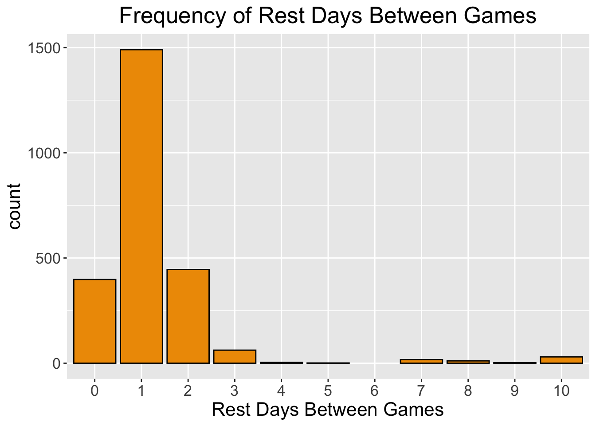
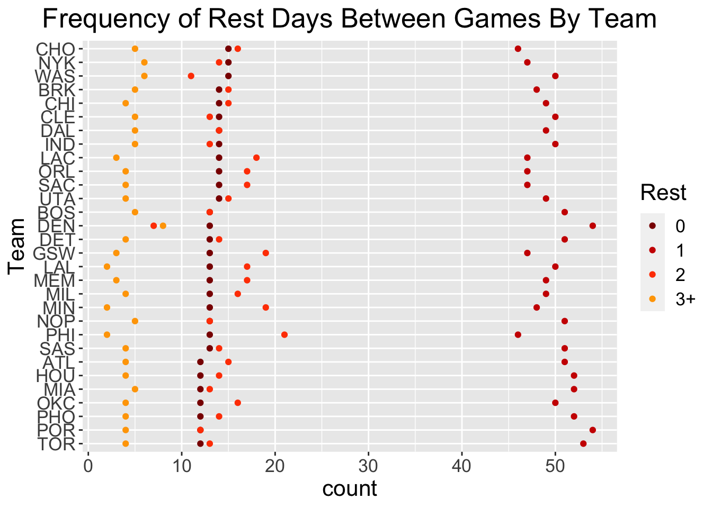
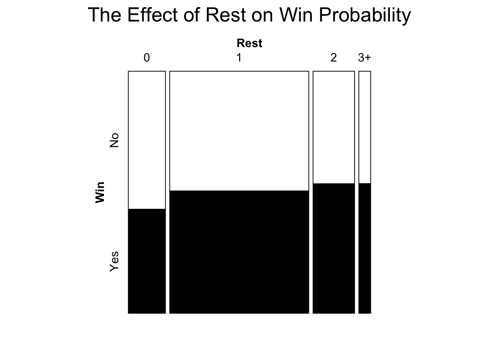
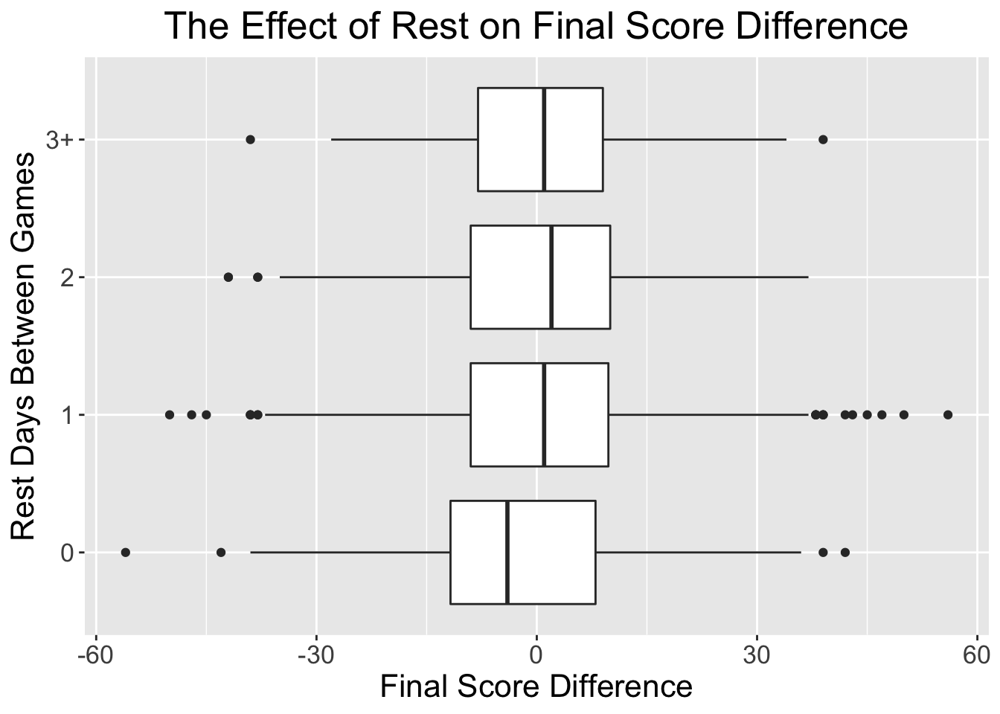
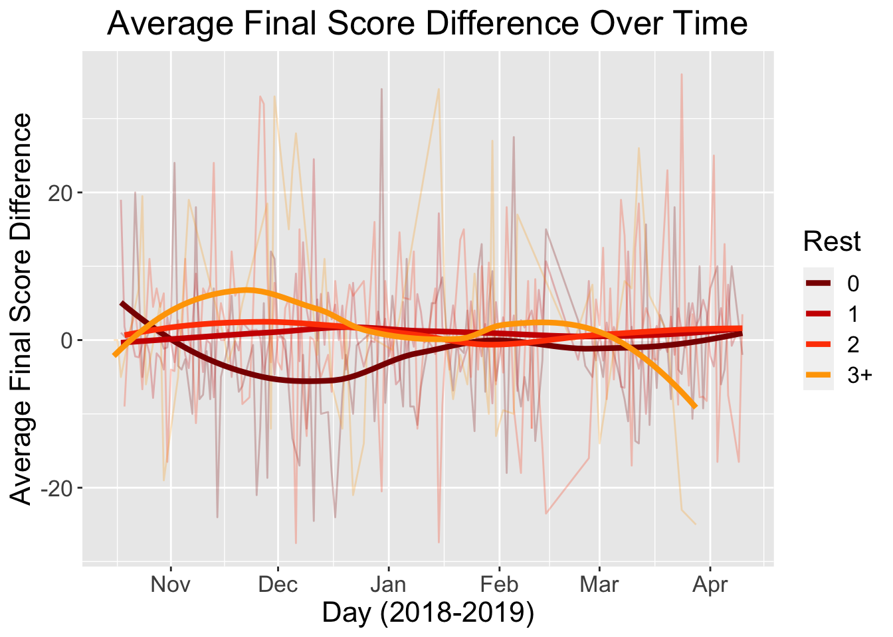
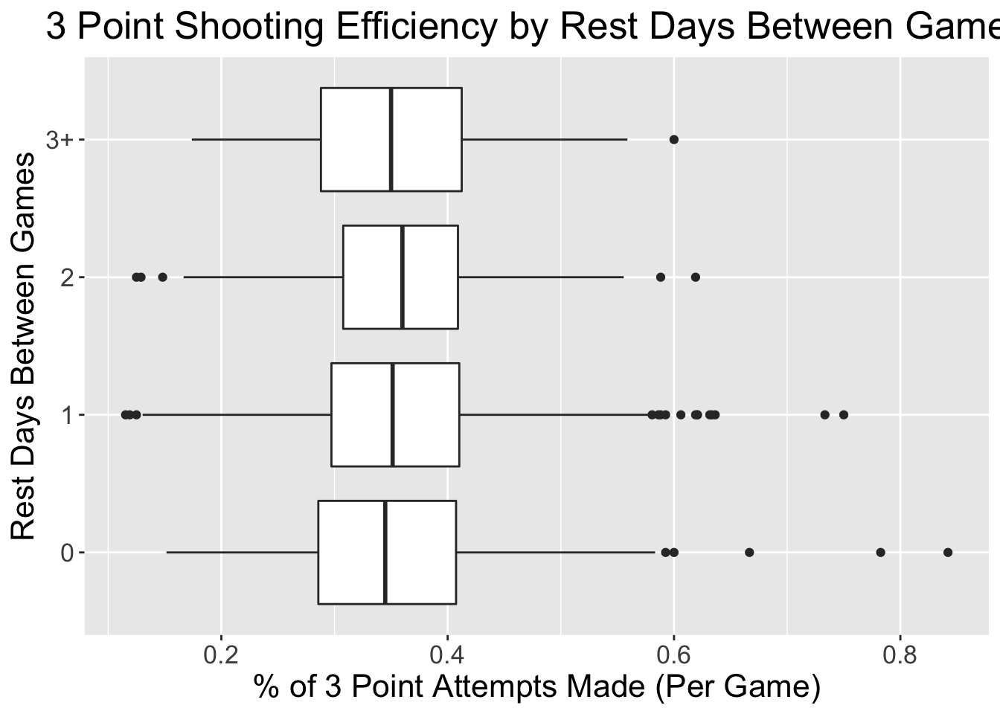
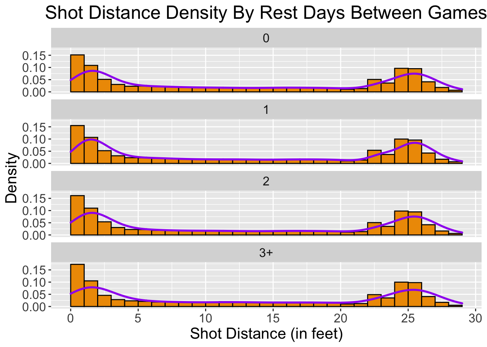
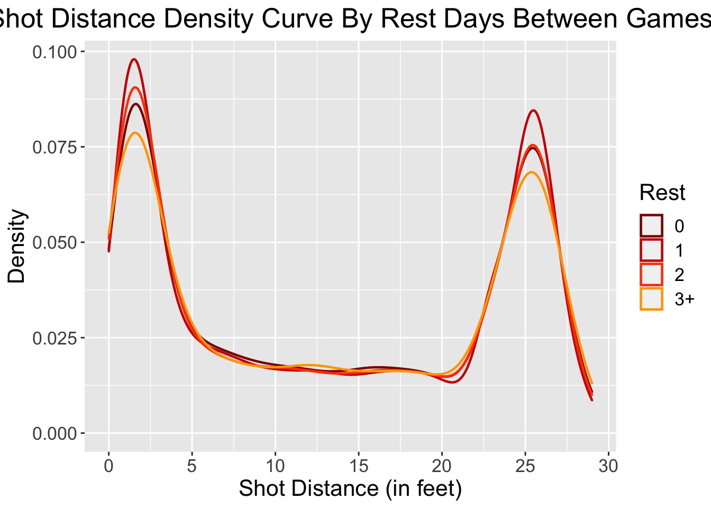
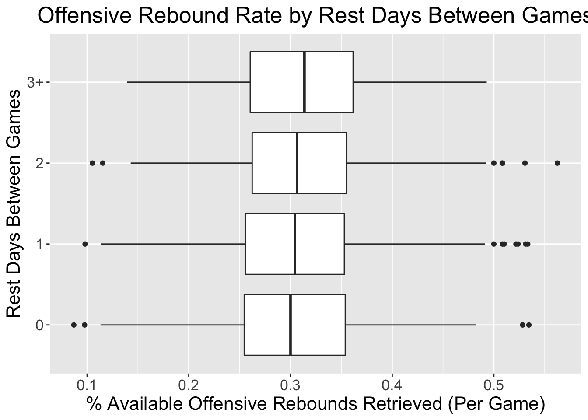
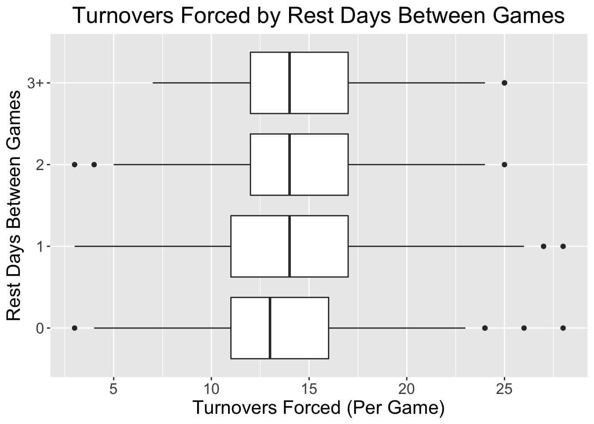

Chapter 5 Results

Before we assess the effect of rest on the various measures of performance we take a preliminary look at the frequencies of different rest intervals. It is easy to see that 1 day of rest between games is far and away the most common. 1 day of rest occurs 3 to 4 times more frequently than the next most frequent rest period which is 0 and 2 days. We see that there is a substantially smaller sample of games after this. To make analysis easier and less cluttered, we decided to bin values exceeding 2 rest days into 1 category called 3+. Our focus will mostly be on 0, 1, and 2 rest days since the sample sizes are large. We note that 10 days of rest are associated with season opening games where there were no games prior.

Since we are looking at the data on a game level and not team by team it is important to make sure that there is not a clustering of certain teams that have played an abnormal number of games for a given rest level. Since teams are of different quality, this would have the potential to confound our analysis. We see that teams play roughly 12 games a season with 0 days of rest between games, 50 games with 1 day, 16 with 2 days, and 4 with 3 or more days. There really isn’t much variation about those averages and no outliers or clustering of note. Therefore, team quality should not confound our analysis. Also since playing back to back games is the most burdensome, we have organized the data in that way. The spread for back to backs is the smallest which is not surprising since the NBA is most conscious of this so it tries to give each team the same number of back to backs as possible.

We see a clear pattern that teams win more often as the number of rest days between games increases. The effect seems to be largest when going from 0 days of rest to 1 and then trails off as if to suggest there are diminishing returns to rest. Teams with no days of rest win materially less than half of their games.

Wins and losses does not tell us anything about how much a team wins or loses by. It could be said that score differential is more insightful than win/loss because the degree to which a team wins or losses has more predictive power. As an example, it would be questionable to say a team that wins by 20 compared to another team that wins by 1 against a common opponent are of the same quality. We see that the pattern is the same when looking at final score differential. The effect of rest is greatest when going from 0 to 1 day of rest. We see clearly that teams with 0 days of rest have a negative point differential on average whereas for the other levels the point differential is positive. It seems as if going from 0 to 1 day of rest confers about a positive 5 point advantage.

It could be hypothesized that the effects of rest are amplified as the season progresses and wear and tear on players accumulates. If this were the case then we should see a fanning out of the smoothing lines as the season progresses. However it does not appear to be the case here. It is interesting to note that during the first couple months of the season point differential correlates how one might expect. The more rest the greater the point differential. In other parts of the season, there appears to be no discernible pattern.

It is not uncommon to hear that shooting starts from the legs. As legs go, so does shooting, particularly long distance shooting since that would presumably require the most energy. We can check the effect of rest on long distance shooting by looking at the percentage of 3 point attempts made by rest days. We see that rest has a small but meaningful effect on shooting efficiency. The average percentage of 3 point attempts made increases with more rest days.

If teams lack of rest causes fatigue to roll over from one game to the next we might expect that teams would choose to take easier shots that the defense is willing to concede rather than working for high value shots that the defense does not want the opponent to get. High value shots are those closest to the basket and 3 point attempts. These shots have the highest expected value. Medium range shots have the lowest payoff but are the easiest to get. Unsurprisingly we see bimodality located at the extremes of shot distance. 0 represents at the basket shot attempts and 3 pointers are roughly 23 feet from the basket. For the most part the shapes of the histograms are remarkably similar. We see that the 3 point attempt part of the distribution remains similar throughout. So it appears that teams shoot the same number of threes regardless of rest days but efficiency drops with less rest. The one difference appears to be at basket attempts, which are the most energy taxing. Basket attempts appear to increase with more rest. As an aside, we can read more into the 3+ rest day category here since this data is taken from play by play data which has a much larger sample size.

Overlaying the density curves of the shot distribution histogram does not appear to support our claim that at basket attempts increase with more rest. In fact, the density curves show that 3+ days of rest makes it least likely to find shots close to the basket. However, we do not read too much into this because we can clearly see that the density curves overlaid on the density histograms do not capture well the start of the histograms. We rely more on the histogram and proceed with our initial conclusion that basket attempts increase with rest.

There are certain skills in basketball that are considered to be overly reliant on effort. Grabbing offensive rebounds is one of them. Here we can clearly see that with more rest the percentage of available offensive rebounds retrieved increases.

Forcing the opposing team to lose possession of the basketball is another skill that is considered to require a lot of effort. Again, we can clearly see an effect although only going from 0 rest days to 1. On average, it looks like teams average 1 more turnover forced per game going from 0 to 1 days of rest.